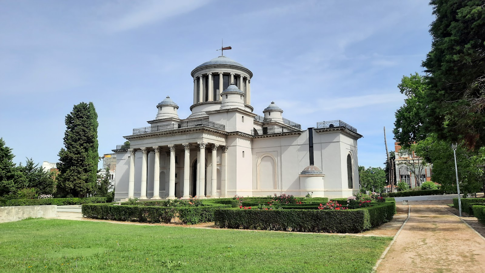

Explora el Paseo Didáctico Virtual
Una herramienta interactiva para aprender desde cualquier lugar. Elige entre seguir la ruta mediante GPS o recorrerla desde casa.



Una herramienta interactiva para aprender desde cualquier lugar. Elige entre seguir la ruta mediante GPS o recorrerla desde casa.
El presente proyecto, tiene como objetivo la digitalización de un paseo didáctio situado en el centro de Madrid. Dicho paseo, pretende facilitar el aprendizaje acerca de la Ilustración española, así como el descubrimiento de tres elementos químicos.
Más informaciónExplora en persona con GPS
Navega la ruta virtual desde casa
Compatible con móvil y PC